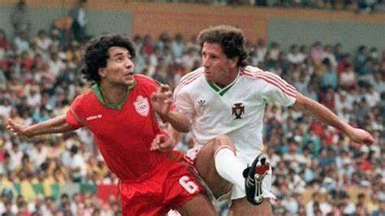

Le Maroc 1986
L'équipe nationale du Maroc de football a participé à la Coupe du Monde 1986 au Mexique, réalisant un exploit historique en se qualifiant pour les huitièmes de finale pour la première fois de son histoire et de l'histoire du football africain et arabe. Le Maroc a remporté son groupe, composé de l'Angleterre, de la Pologne et du Portugal, avec quatre points, après avoir fait match nul avec la Pologne et l'Angleterre et remporté contre le Portugal par trois buts à un. Dans ce match, Abdelrazak Khairi a marqué deux buts et Abdelkrim Merry un but. En huitièmes de finale, le Maroc a affronté l'Allemagne de l'Ouest, l'un des favoris pour remporter le titre. Le Maroc a résisté avec acharnement et a maintenu le score nul jusqu'à la 87e minute, lorsque l'Allemand Lothar Matthäus a marqué un superbe but de l'extérieur de la surface. Avec ce but, le Maroc a quitté le tournoi avec honneur et respect, recevant des éloges de la part des supporters et des critiques. L'équipe marocaine lors de la Coupe du Monde 1986 comptait des joueurs talentueux et distingués, dont le gardien Badou Zaki, élu meilleur gardien du tournoi, le défenseur Abdelmajid Lamriss, et le milieu de terrain Mohamed Timoumi, lauréat du prix du meilleur joueur africain en 1985. L'attaquant Abdelrazak Khairi, meilleur buteur de l'équipe lors du tournoi avec deux buts, faisait également partie de cette équipe. Quelques faits marquants entourant la participation du Maroc à la Coupe du Monde 1986 comprennent l'entraîneur brésilien José Faria, surnommé Al-Mehdi, qui avait pris en charge l'équipe seulement un an avant le tournoi, parlait difficilement le français mais a réussi à construire une équipe solide et cohérente. L'équipe marocaine souffrait de faiblesse financière et logistique, voyageant entre les villes mexicaines en autobus et n'ayant ni médecin ni assistant technique. L'équipe jouait de manière offensive et audacieuse en utilisant un système 4-3-3, se basant sur la vitesse, les passes courtes et les mouvements intelligents, avec des joueurs capables de tirer de loin. L'équipe marocaine bénéficiait d'un grand soutien des supporters mexicains, qui l'encourageaient à chaque match en chantant "Maroc, mon amour," exprimant ainsi leur sympathie envers l'équipe africaine et arabe. 